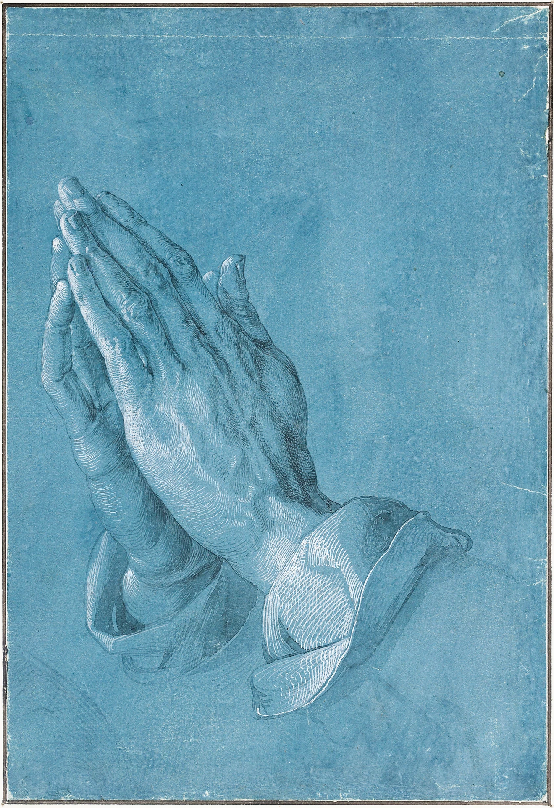
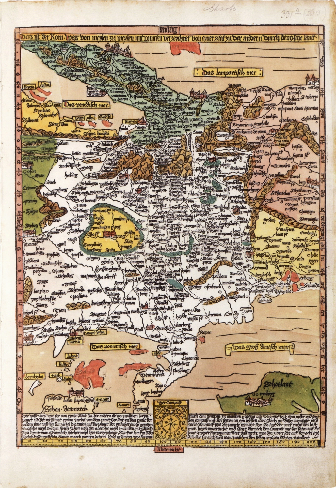
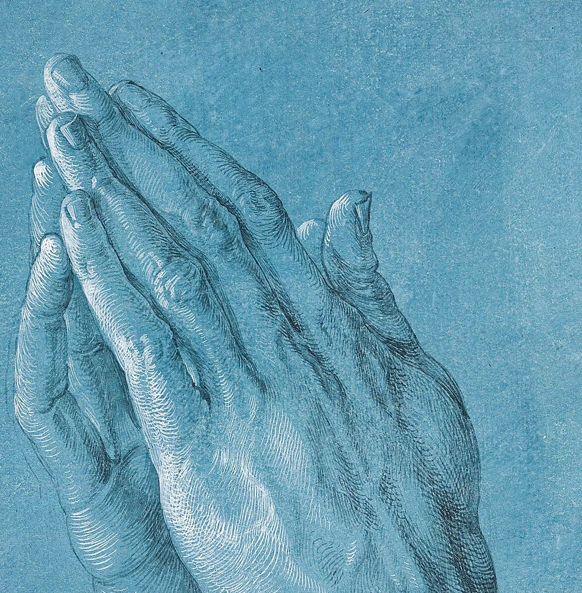

아직 펼치지 않은 카드그림 속 손 · 2기도하는 손이 손은 누구의 손일까요?이 손은 누구 손일까?
1508년독일 뉘른베르크 · 지금은 오스트리아 빈 알베르티나
기도하는 손
1509년 8월, 뒤러는 다 그린 제단화를 떠나보내며 “깨끗이 두면 500년은 밝고 생생할 것”이라고 썼어요. 그 그림에 들어간 사도의 손을 먼저 연습한 종이가 「기도하는 손」이에요. 1500년 뉘른베르크에서 만든 옛 지도 위로, 그림이 간 길을 따라가 보세요.
뒤러 아저씨가 큰 그림을 그리려고 파란 종이에 손을 먼저 연습했어. 큰 그림은 먼 길을 떠났대. 옛날 지도 위로 같이 따라가 볼까?
검수 전 시안이에요(기준서 1판). 장면에는 뒤러가 헬러에게 쓴 편지(콘웨이 1889년 영어 번역)와 프랑크푸르트 역사박물관, 서평과 연구에 있는 것만 옮겼어요. 기록이 서로 다른 곳은 ‘기록마다 다른 점’에 적었어요. 상상은 ‘눈 감고 상상해 보기’에만 썼어요.
시안 확인용카드 단계 미리 보기
1
프랑크푸르트에서 온 편지
1507년, 프랑크푸르트의 상인 야코프 헬러와 아내 카타리나가 뉘른베르크의 뒤러에게 제단화를 주문했어요. 부부가 묻힐 도미니코회 교회에 걸 그림이었어요.
그 무렵 뒤러는 베네치아에서 지내다 막 돌아온 참이었어요. 1507년 8월 28일, 그는 헬러의 편지를 반갑게 받았다는 답장을 썼어요. 두 해 동안 이어질 편지 아홉 통의 첫 통이에요.

사진 가운데 큰 그림은 1614년에 원래 그림 대신 걸린 복제본이에요. 원래 그림은 뒤러가 혼자 그렸고, 양쪽 날개는 조수들이 함께 그렸어요.
멀리 프랑크푸르트에서 그림을 그려 달라는 편지가 왔대.
물어보기누군가에게 그림을 부탁한다면 무엇을 그려 달라고 할까?
2
연습한 손
1508년, 뒤러는 큰 그림에 들어갈 사람들의 머리와 손, 발, 옷자락을 한 장씩 따로 그렸어요. 1889년에 뒤러의 글을 엮은 콘웨이는 이런 연습 그림이 스물한 장 남아 있고, 대부분 1508년에 그렸다고 적었어요.
「기도하는 손」도 그 가운데 하나로 여겨져요. 큰 그림 오른쪽에서 무릎 꿇은 사도의 손이에요.
“가운데 그림에는 나 말고는 아무도 붓질 한 번 하지 않을 것이오.”
뒤러가 헬러에게 쓴 편지, 1508년 8월 24일 · 콘웨이의 영어 번역을 이 안내서가 옮김
처음 약속한 값은 130플로린이었어요. 같은 편지에서 뒤러는 이렇게 공들여 그리려면 200플로린은 받아야 한다고 썼어요.
큰 그림을 그리기 전에, 손을 따로 연습했대.
물어보기너는 그림을 그리기 전에 무엇을 먼저 연습해 보고 싶어?
3
그림이 간 길
이 지도는 1500년 무렵 뒤러가 살던 뉘른베르크에서 만들었어요. 그해 로마로 가는 순례자들을 위해 만든 길 지도예요. 남쪽이 위를 향해요.
‘다음 곳으로’를 누르면 뒤러와 그의 그림이 지나간 곳이 차례로 이어져요. 곳과 곳 사이는 곧은 선으로 이었어요(실제 길과 달라요).
‘다음 곳으로’를 눌러 그림이 간 길을 따라가 보세요. 이 지도는 남쪽이 위예요.

베네치아뉘른베르크프랑크푸르트뮌헨에르하르트 에츨라우프, ‘로마 가는 길’ 지도, 1500년 무렵 · 뉘른베르크 · 에르하르트 에츨라우프 판화 · 퍼블릭 도메인 · 위키미디어 공용
큰 그림은 불에 탔어요. 뉘른베르크 작업실의 연습 종이는 남아, 지금 빈의 알베르티나 미술관에 있어요.
옛날 지도는 위쪽이 남쪽이래. 그림이 어디로 갔는지 따라가 보자.
물어보기그림이 마지막에 도착한 곳은 어디였어?
4
복제본 속의 손
큰 그림은 사라졌지만, 1614년에 그 자리를 채운 복제본이 남아 있어요. 오른쪽 아래, 붉은 망토의 사도가 하늘을 올려다보며 두 손을 모아요.
연습 그림 속 손이 큰 그림에서 이 사도의 손이 되었어요. 복제본을 그린 사람은 뉘른베르크의 화가 요프스트 하리히로 알려져 있어요.

큰 그림 한가운데 조금 왼쪽, 먼 풍경 속에는 뒤러 자신이 서 있어요. 그가 든 판에는 “독일 사람 알브레히트 뒤러가, 동정녀께서 아기를 낳으신 뒤 1509년에 이것을 그리고 있었다”라는 라틴어 글과, AD라는 머리글자가 크게 적혀 있어요.
연습한 손이 큰 그림에서 사도 할아버지의 손이 되었어.
물어보기두 그림에서 똑같은 손을 찾아볼까?
5
500년의 약속
뒤러는 깨끗이 두면 500년은 밝고 생생할 거라고 했어요. 하지만 큰 그림은 500년을 채우지 못하고 뮌헨 궁전의 불에 사라졌어요.
1508년의 연습 종이는 남았어요. 지금은 빈의 알베르티나 미술관이 이 종이를 지켜요. 빛에 약한 종이라 늘 걸어 두지는 않아요.

오랫동안 사람들은 이 손을 제단화를 위한 연습 그림으로 여겨 왔어요. 알베르티나의 큐레이터 크리스토프 메츠거는, 작업실을 찾은 손님에게 솜씨를 보여 주려고 끝까지 공들여 그린 작품이라고 봐요.
큰 그림은 불에 탔지만, 연습한 종이는 지금도 남아 있어.
물어보기오래 남기고 싶은 그림이 있다면 어떻게 지킬까?
눈 감고 상상해 보기
뉘른베르크의 작업실. 창가 탁자에 파랗게 칠해 말린 종이가 놓여 있어요. 가는 붓에 검은 먹을 묻혀 손가락 마디를 하나씩 그어 나가요. 다른 붓으로 흰 물감을 찍자, 손끝에 빛이 얹혀요. 창밖에서 수레바퀴 소리가 지나가요.
눈을 감아 봐. 파란 종이 위에 하얀 물감으로 손끝을 콕콕. 반짝 빛이 생겼어.
나의 자리
나는 언제 두 손을 모으나요? 그때 마음속에는 누가 있나요?
두 손을 모아 볼까? 지금 누구를 생각하고 싶어?
마음에 닿는 한 줄을 고르거나 직접 써 보세요. 한 줄을 남기면 이 자리의 도장이 찍혀요. 이 기기에만 저장돼요.
더 깊이
궁금한 칸만 펼쳐 읽어도 괜찮아요.
알고 보면
울트라마린을 대여섯 겹 뒤러는 가운데 그림에 좋은 울트라마린을 밑에도, 위에도, 또 그 위에도 대여섯 번 칠했다고 편지에 적었어요. 울트라마린은 청금석을 갈아 만든 비싼 파란 물감이에요.
니스는 내가 뒤러는 다른 니스는 모두 누렇다며, 다른 사람이 그림에 니스를 칠하지 못하게 하라고 당부했어요. 니스는 그림을 보호하려고 겉에 바르는 투명한 칠이에요.
그림 속의 뒤러 가운데 그림 한가운데 조금 왼쪽 먼 풍경에 판을 든 사람이 뒤러예요. 2023년에 이 그림을 다룬 책을 쓴 역사학자 울링카 루블랙은, 값을 두고 다툰 뒤 뒤러가 자신을 그림 한가운데에 세웠다고 풀이해요.
세로 29cm의 종이 「기도하는 손」은 세로 29.1cm, 가로 19.7cm예요. 회색과 검은 먹, 흰 물감으로 그렸어요.
기록마다 다른 점
불탄 해 2023년에 나온 루블랙의 책과 그 서평은 1729년 뮌헨 궁전의 불로 적어요. 1889년 콘웨이의 책은 1674년, 프랑크푸르트 역사박물관은 1724년으로 적어요.
연습인가, 작품인가 오랫동안 이 그림은 제단화를 위한 연습 그림으로 여겨졌어요. 알베르티나의 큐레이터 메츠거는 손님에게 보여 주려고 끝까지 그린 작품이라고 봐요. 뒤러의 편지에는 이 그림의 이름이 나오지 않아요.
종이의 색 1889년 콘웨이는 연습 그림들을 회색 종이에 그렸다고 적었어요. 지금은 뒤러가 직접 파랗거나 초록빛으로 바탕을 칠한 종이로 설명해요.
얼마를 받았나 프랑크푸르트 역사박물관은 뒤러가 처음에 130굴덴(플로린과 같은 돈)을 말했다가, 계산이 100굴덴 모자랐다며 200을 달라고 했고, 헬러가 따지면서도 치렀다고 적어요. 2024년 한 서평은 뒤러가 값을 조금 올렸지만 돈으로는 헬러가 이긴 셈이라고 써요.
직접 가 보기
확인한 날 · 2026년 11월 18일 · 바뀌기 쉬운 정보라 정기적으로 다시 확인해요
복제본과 날개 독일 프랑크푸르트 역사박물관의 상설 전시 ‘프랑크푸르트 아인스트?’(새 건물 2층 ‘돈의 도시’)에 있어요. 화요일~일요일 오전 11시~오후 6시에 열고, 월요일은 쉬어요. 상설 전시 입장료는 8유로(할인 4유로), 18살까지는 무료예요.
「기도하는 손」 오스트리아 빈의 알베르티나 미술관에 있어요. 빛에 약한 종이 그림이라 늘 걸려 있지 않아요. 가기 전에 지금 전시 중인지 미술관에 확인해 주세요.
그림이 간 길 끝까지 금박
‘그림이 간 길’ 장면에서 마지막 곳까지 따라가면 카드에 금박이 입혀져요.
그림이 간 길을 마지막 곳까지 따라가기
아이와 함께 끝까지 채색
아이와 함께 ‘영화처럼 보기’를 끝까지 보면 카드가 채색돼요.
아이와 함께 ‘영화처럼 보기’를 끝까지 보기
근거 보기 (9)
- William Martin Conway, 『Literary Remains of Albrecht Dürer』(1889) 5장 — 헬러 편지 아홉 통의 날짜(1507.8.28~1509.10.12), 130·200플로린, ‘나 말고는 아무도 붓질 한 번 하지 않으리’, 울트라마린 대여섯 겹, ‘깨끗이 두면 500년’, 만지지도 성수를 뿌리지도 말 것, 다른 니스 금지, 한스 임호프에게 넘기고 100플로린, 무덤 위에 걸린 그림, 연습 그림 스물한 장(대부분 1508년, 회색 종이), 1674년 불
- 프랑크푸르트 역사박물관: 헬러 제단화(B0271 자료) — 1507년 헬러 부부의 주문, 도미니코회 교회 무덤 자리, 가운데 그림은 뒤러가 혼자 그림, 130→200굴덴, 1614년 막시밀리안 공작에게 팜, 복제본, 1724년 뮌헨에서 탐
- 프랑크푸르트 역사박물관: 헬러 제단화(B0265) — 1614년 복제본, 189×139cm, 상설 전시 ‘프랑크푸르트 아인스트?’ 새 건물 2층 ‘돈의 도시’, 날개는 조수들이 함께 그림
- 프랑크푸르트 역사박물관 보도자료(2026년 4월 30일) — 여는 시간과 입장료(2026년 11월 18일 확인)
- The New York Review of Books(2024년 2월 22일), 울링카 루블랙 『Dürer’s Lost Masterpiece』 서평 — 1729년 뮌헨 궁전 불, 1614년 막시밀리안과 복제본, 지금 프랑크푸르트 역사박물관, 한가운데 조금 왼쪽의 뒤러와 AD 머리글자 판, ‘500년 뒤에도’, 값 다툼의 결과
- Artchive(2019): 빈 알베르티나 뒤러 회고전 — 큐레이터 크리스토프 메츠거의 ‘손님에게 보여 줄 작품’ 풀이와 오래된 ‘연습 그림’ 풀이
- TheHistoryOfArt.org: Praying Hands — 알베르티나 3113, 29.1×19.7cm, 회색·검은 먹과 흰 물감, 파랗게 바탕을 칠한 종이, 큰 그림 오른쪽에서 무릎 꿇은 사도의 손
- German History Intersections: 에츨라우프의 ‘로마 가는 길’ 지도(1500년 무렵) — 첫 독일 길 지도, 1500년 성년 순례자용, 남쪽 방향, 점선 길, 뉘른베르크
- Venice in Blue(세인트앤드루스 대학 전시, 2021): 뒤러, 「성 도미니코의 손」(1506) — 파란 종이에 회색 먹과 흰 물감, 알베르티나, 장미 화관 축제 그림을 위한 연습, 베네치아의 파란 종이가 그리는 법을 바꿈
그림·사진·소리 출처
‘처음 만나는 기독교 문화’의 깊은 카드예요. 카드 단계와 남긴 글은 이 기기에만 저장돼요.